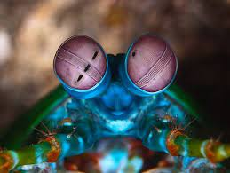
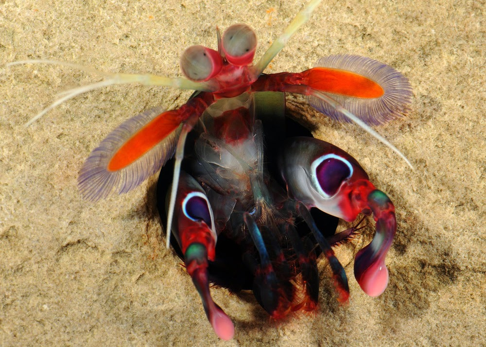

Fatos sobre o Stomatopoda.
O que é Odontodactylus scyllarus?
Os estomatópodes são predadores ativos que caçam presas com o auxílio de um sentido de visão muito apurado e capaz de interpretar polarização no espectro ultravioleta e infravermelho). Apresentam uma grande variação de tamanho, que pode ir de poucos milímetros até aproximadamente 40 cm nas espécies maiores. Eles vivem em fundo consolidado, lodoso ou ainda arenoso, onde cavam seus buracos ou aproveitam-se dos orifícios deixados por outros animais para neles se instalar. São animais exclusivamente carnívoros, alimentando-se de camarões, caranguejos, moluscos, peixes e até mesmo outros da mesma ordem. O segundo par de patas, muito desenvolvido, é usado tanto para atacar a presa como para se defender.
| Reino | Animália |
|---|---|
| Filo | Arthropoda |
| Subfilo | Crustacea |
| Classe | Malacostraca |
| Subclasse | Hoplocarida |
| Ordem | Stomatopoda |
Olhos do camarão mantis
Este é o olho de um camarão mantis - um animal marinho que não é um mantis nem um camarão, mas um parente próximo de caranguejos e lagostas. É um olho composto, feito de milhares de pequenas unidades que detectam a luz de forma independente. Aqueles na banda média - a faixa central que você pode ver na foto - são especiais. São eles que deixam o animal ver as cores.
O soco mais forte
O Camarão Mantis esmagador possui dois apêndices bem desenvolvidos (semelhantes a um martelo), chamados de Porretes de Dáctilo. Com essas “super patas” o animal espanca e esmaga suas presas em uma intensidade de aproximadamente 60 kg/cm² (daí o motivo de um de seus nomes ser lagosta-boxeadora).
